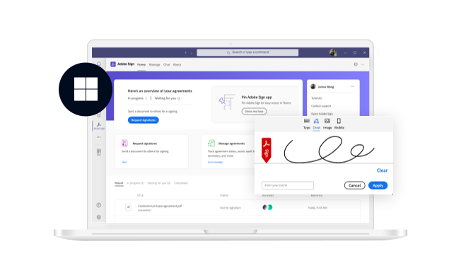
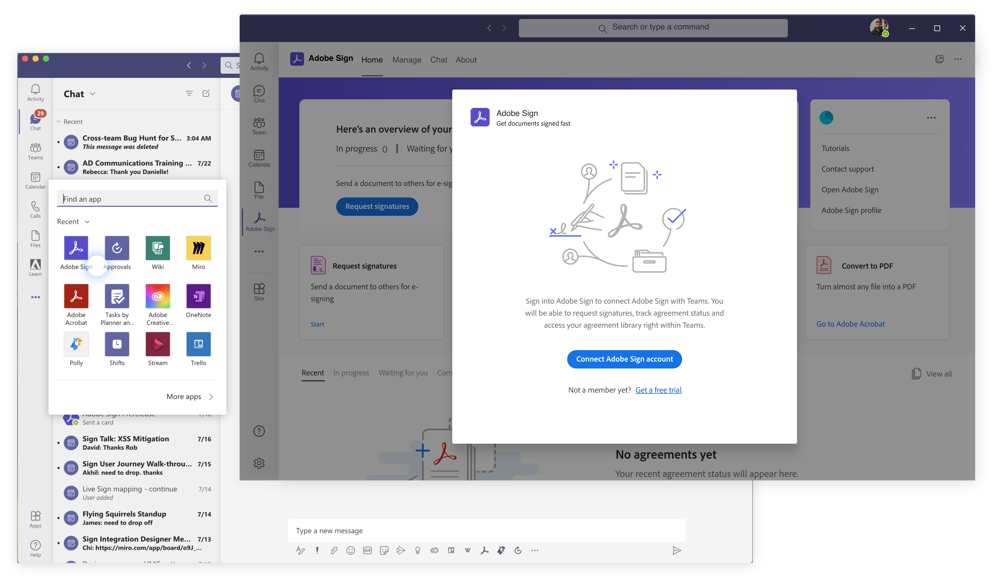
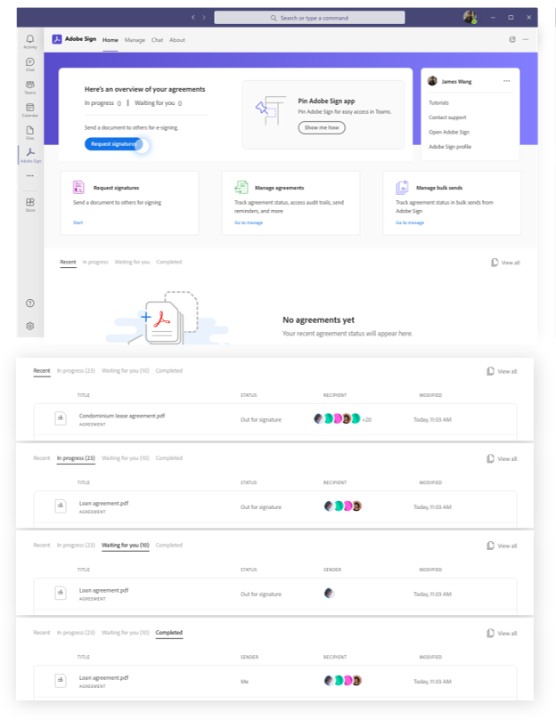
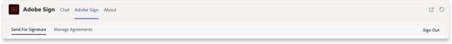
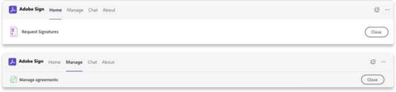
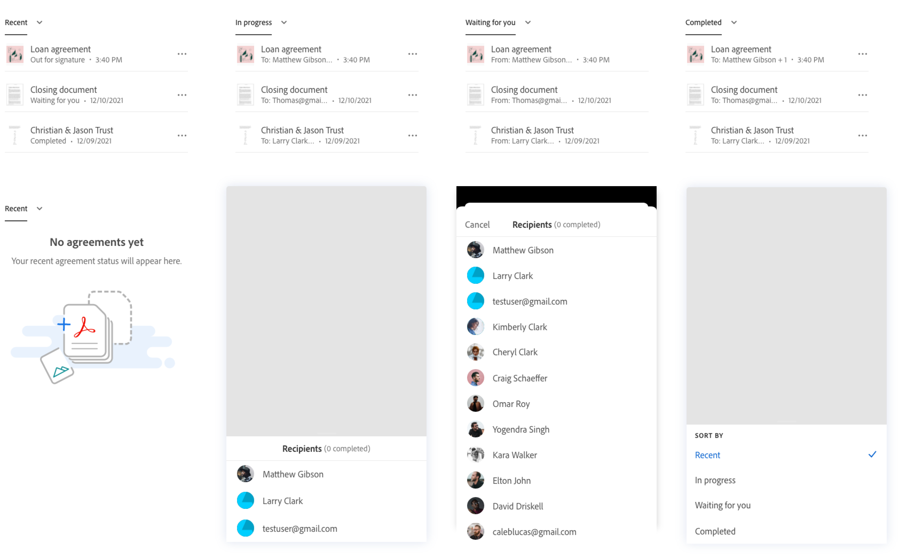
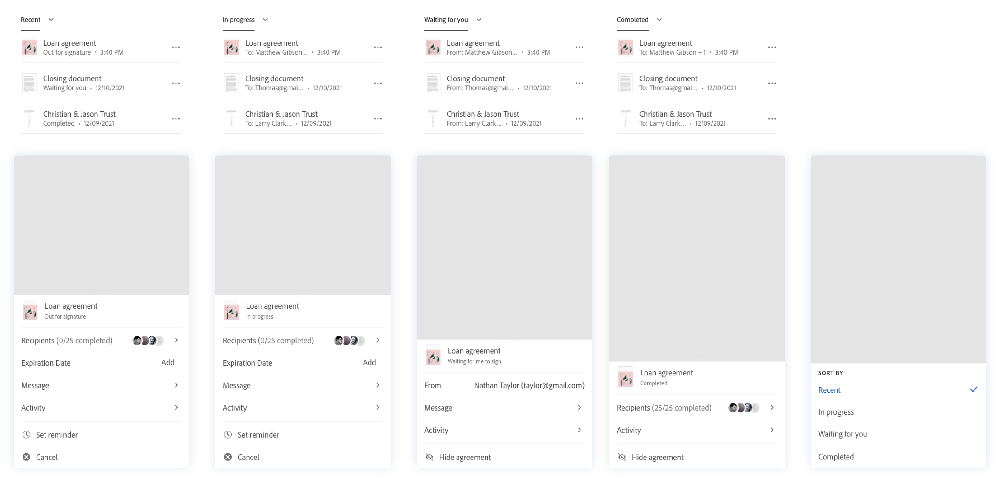
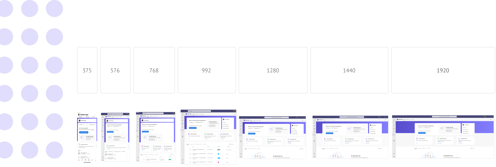
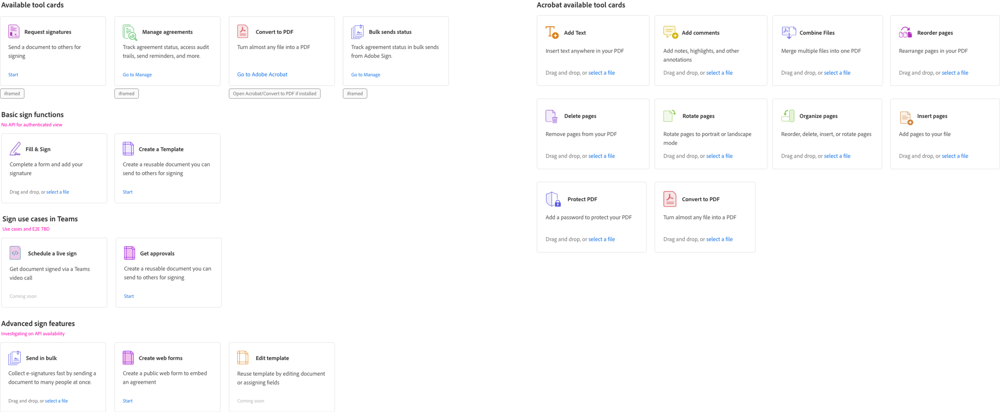

Make it possible to have your document signed in one collaborative place.
Microsoft first launched Teams as its native business communication platform in 2017, it allows people to chat, videoconferencing, managing office files within one pletform. When pandemic hits the workplace in 2019, we started this partnership with Teams and aimed to provide Adobe Acrobat Sign as an integrated eSign solution right within Teams.
More at Adobe.com🎨 Lead Designer
⏱️ Launched 2022
🏢 SMB & Enterprise customers
Lead the design conversation from zero to MVP, and continue to support on overall integration product strategy, catching the pandemic train when everyone goes online for signatures.
Expereience problem
After conducting an initial audit of the current user experience and collaborating with the research team to identify fundamental user needs for this add-in, we have distilled a set of key user problems that need to be addressed in the MVP.

😵💫
Default to unfamiliar chat experience
Missing onboarding or guidance for first time users
Lack of consistency with Acrobat Sign web experience
Nested tabs and inherent IA issues due to iFrame
Not optimizedfor Microsoft Teams
Limited mobile support in place
Design goal
Make Adobe Acrobat Sign for Microsoft Teams personal app a central hub for getting signatures, track agreement status and discovering Adobe Acrobat Sign value..

One consistent piece of feedback we frequently receive from users is the inconvenience of having to log in multiple times for integrations. Therefore, before we have a comprehensive design solution, I worked closely with eng team to prioritize SSO for enterprise users.
In the new home tab, users will be able to check the most recent agreements and take actions directly from there, instead of redirecting to the unfamiliar chat experience.

Information architecture
The add-in was initially built as a basic iframe, causing the Adobe Acrobat Sign app to be nested within Microsoft Teams' default navigation structure. This led to a cumbersome navigation experience, often requiring users to navigate through three or even four layers to complete simple tasks such as requesting a signature. We collaborated closely with our Microsoft partner, engaging with design, product, and engineering teams to solve this problem. With our updated proposal, users can now easily navigate their current task and seamlessly backtrack without losing context.


Design with a long-term vision
Microsoft Teams rolled out its mobile experience to integration partners at a later stage. As the screen size shifted, the way people engage with the add-in become different. This was particularly true for critical and time-sensitive agreements, where mobile is a place for users to monitor signature statuses and engage in quick chats. Keeping this in focus, I adjusted the mobile experience to reflect this need.
MVP for the agreement status section

Ideal experience for the agreement status section

Scalable solution
Working with the eng team, we defined the breakpoint for the experience, and provided UI framework with detailed specs on how the screen will flow in different screen sizes.

Unique needs
While leading this experience, I concurrently collaborated on integrating Acrobat into Microsoft Teams. Our joint effort aimed to synchronize the user experience seamlessly between the two add-ins. we went through all the available tools and aligned on the product roadmap with our partners considering feasibility, timeline and experience.
